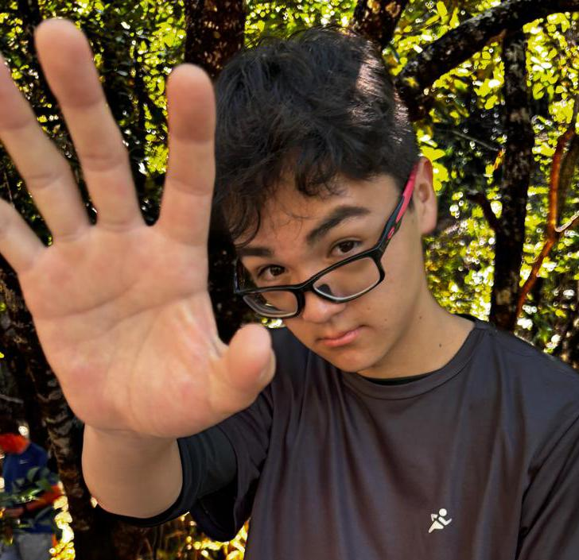

Pedro Augusto de Castro Saito

- Nasci em Patrocínio, Minas Gerais
- Tenho 15 anos
- Estudo no IFTM Campus Patrocínio, e faço o curso de Informática
- Estou no 2° ano do ensino médio
- Gosto de jogar video games, motivo de eu ter escolhido esse tema
- Gosto de explorar lugares novos/diferentes
- Faço trilhas em cachoeiras
Jogos que fizeram história